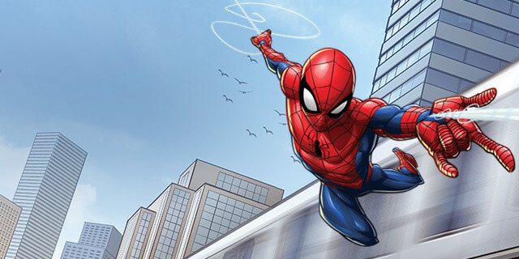

Spider-Man
Peter Benjamin Parker
Aliases
Friendly Neighborhood Spider-Man, the Amazing Spider-Man, the Sensational Spider-Man, the Spectacular Spider-Man, "Tiger," Spidey, Webhead, Webslinger, Wall-crawler, "Little Man"; formerly "the Amazing Octo-Spidey", Bag-Man, "Bookworm," Captain Universe, Dusk, Hornet, Mad Dog #336, Man-Spider, Prodigy, "Puny Parker," Ricochet, Scarlet Spider, Spider-Hulk, Spider-Phoenix
Identity
Secret
Citizenship
U.S.A
Place of Birth
Forest Hills, New York
Occupation
Scientist and inventor; former freelance photographer, assistant high school coach, science teacher
Known Relatives
Richard Parker (father, deceased), Mary Parker (mother, deceased), Benjamin Parker (uncle, deceased), May Parker (aunt), Will Fitzpatrick (grandfather), Benjamin Reilly (Scarlet Spider, clone, deceased), Kaine (clone), other clones (deceased)
Group Affiliation
Avengers, formerly the Secret Defenders, "New Fantastic Four", the Outlaws
Education
College graduate (biophysics major), doctorate studies in biochemistry (incomplete)
Powers
Peter can cling to most surfaces, has superhuman strength (able to lift 10 tons optimally) and is roughly 15 times more agile than a regular human. The combination of his acrobatic leaps and web-slinging enables him to travel rapidly from place to place. His spider-sense provides an early warning detection system linked with his superhuman kinesthetics, enabling him the ability to evade most any injury, provided he doesn't cognitively override the autonomic reflexes. Note: his power enhancements through his transformation by the Queen and after battling Morlun - including his organic web glands and stingers - have been undone after Spider-Man's deal with Mephisto.
Abilities
Peter is an accomplished scientist, inventor and photographer.
Weapons
None
Paraphernalia
Spider-Man designed and constructed several devices that he traditionally carries as part of his full costume. This includes twin artificial web-shooters worn at the wrists, spare web cartridges attached to his belt, spider-tracer devices attuned to his spider-sense, the spider-signal light, and a compact camera. He has reconstructed his web shooters out of a high density plastic to avoid metal detectors, and has added modifications to detect low web-fluid levels, and propel spider-tracers. For a time while allied with Iron Man, Spider-Man wore a costume that was equipped with filters in the mouth area to keep out toxins and allow him to breathe underwater, audio amplification, visual amplification (including vision in the infrared and ultraviolet wavelengths), a short-range GPS microwave communication system (with a built-in fire, police, and emergency scanner), and retractable webbing under his arms that allow short bursts of gliding. The costume was made of a material that could serve as a bulletproof jacket against small caliber bullets. For the first upgrade to the costume, Stark added three mechanical waldo arms, which can grab and move objects as well housing cameras which transmit images back to the costume's eyepiece. The waldoes can also be used offensively in combat. The costume is now built out of a liquid metal nanofiber material allowing it to quickly change in appearance upon mental command into anything from Spider-Man's civilian clothes to his former costumes, as well as providing camouflage by blending with the surrounding colors.